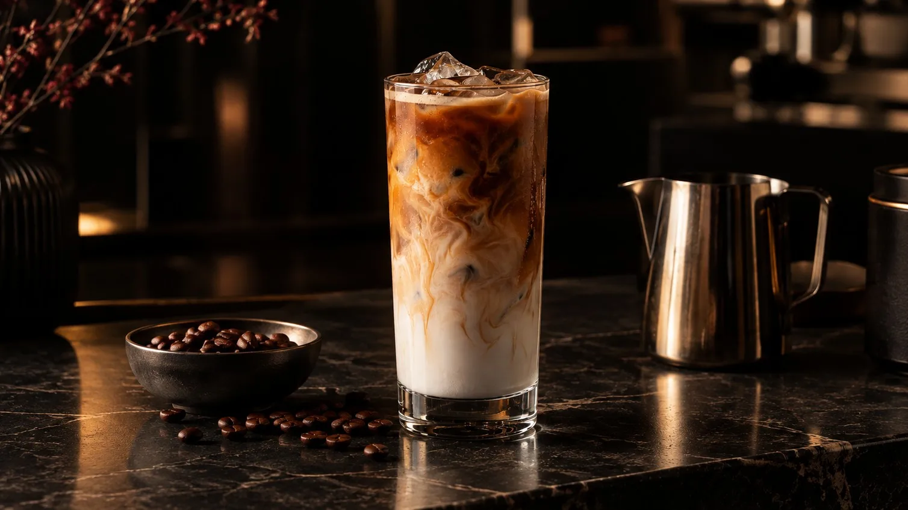
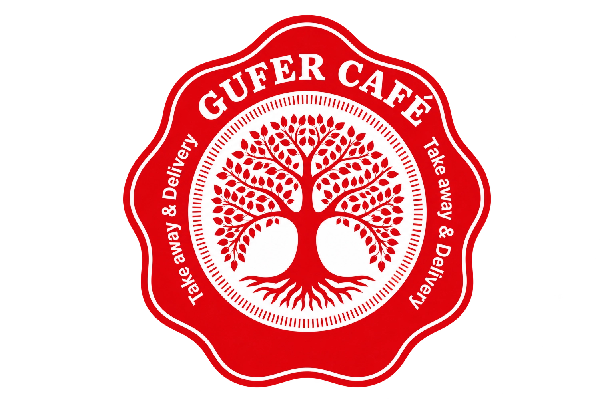
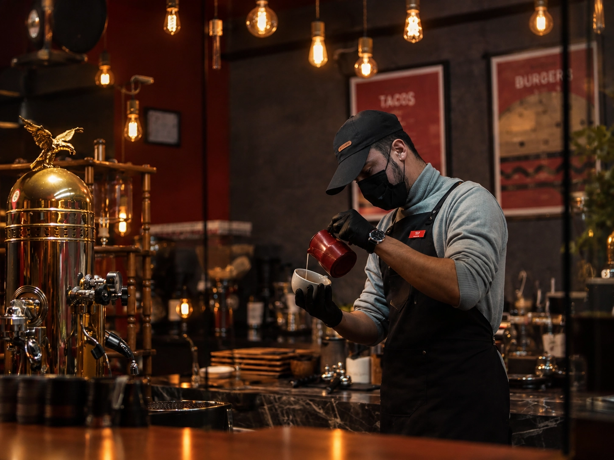
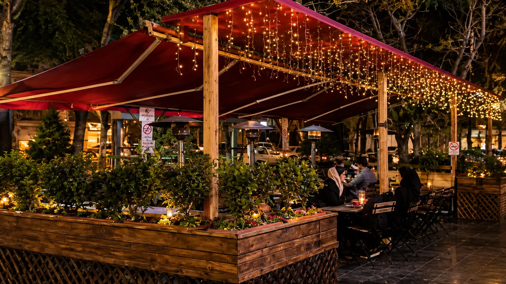
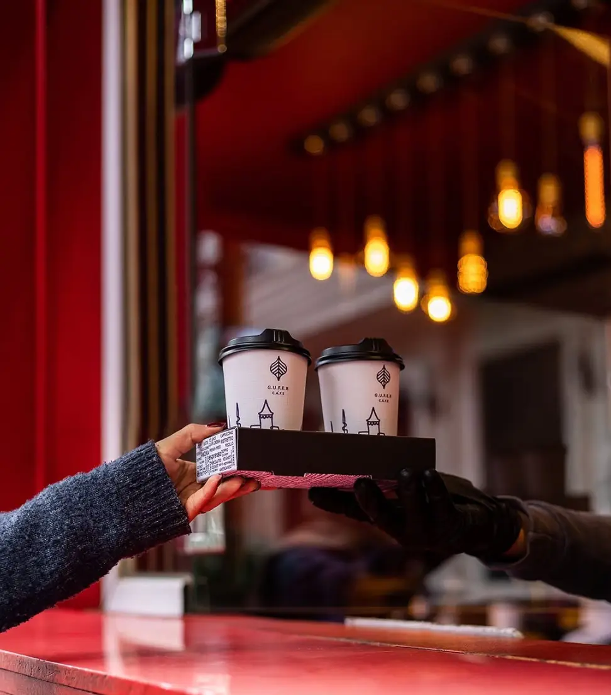
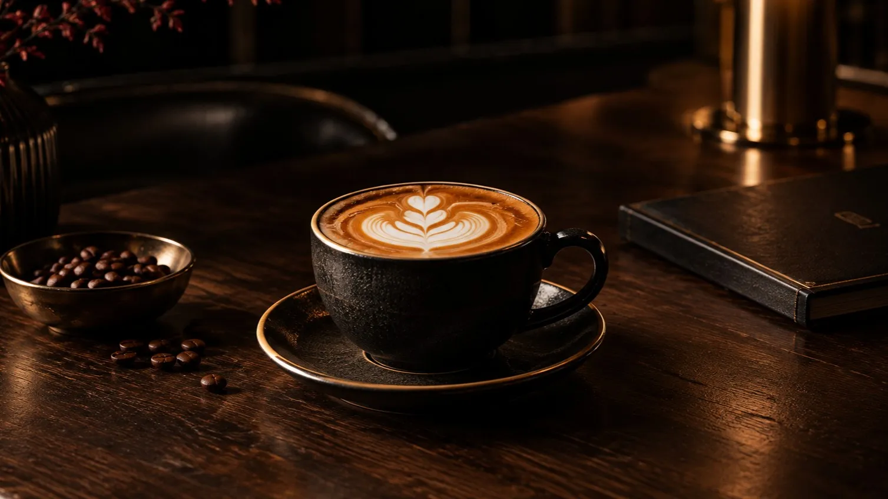
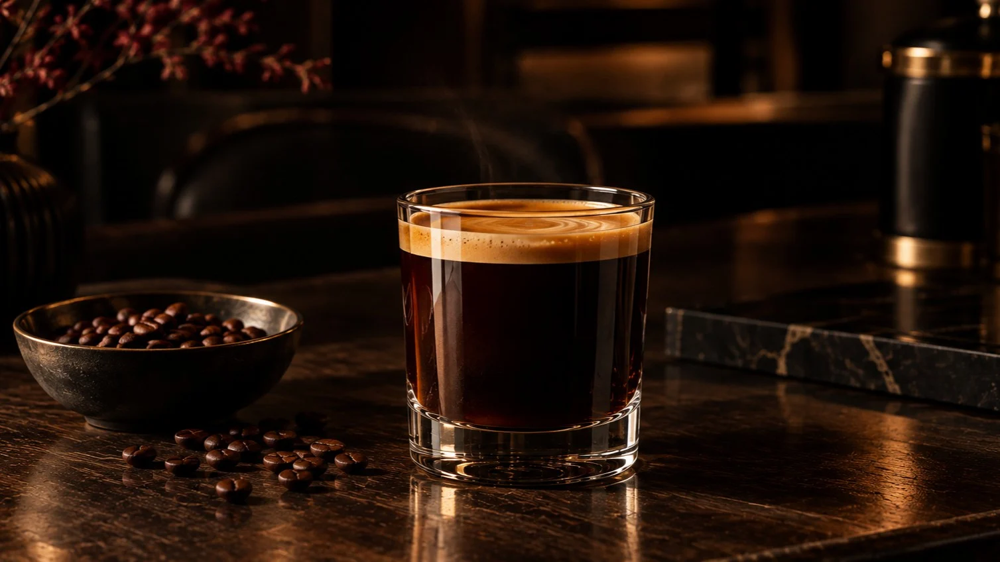
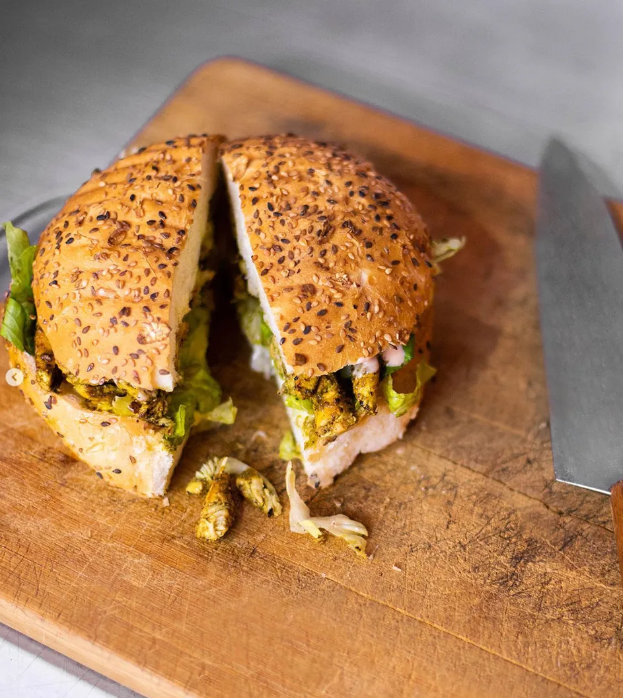
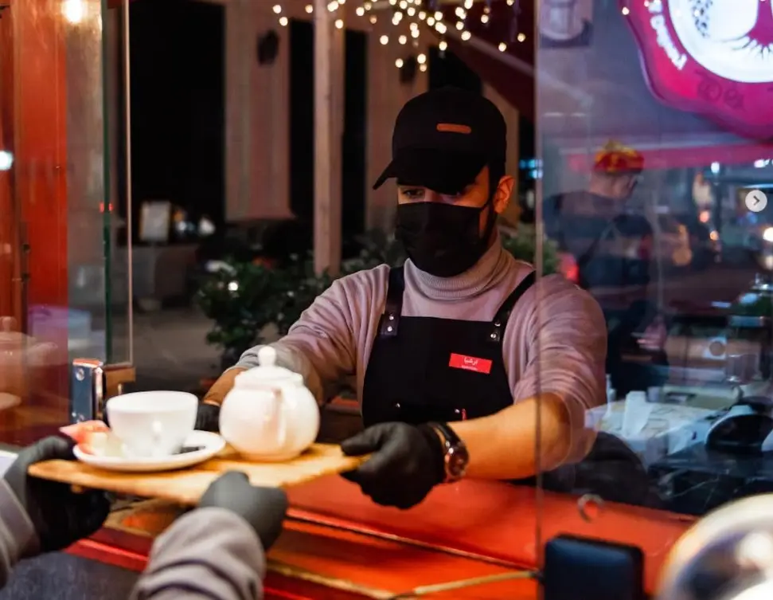
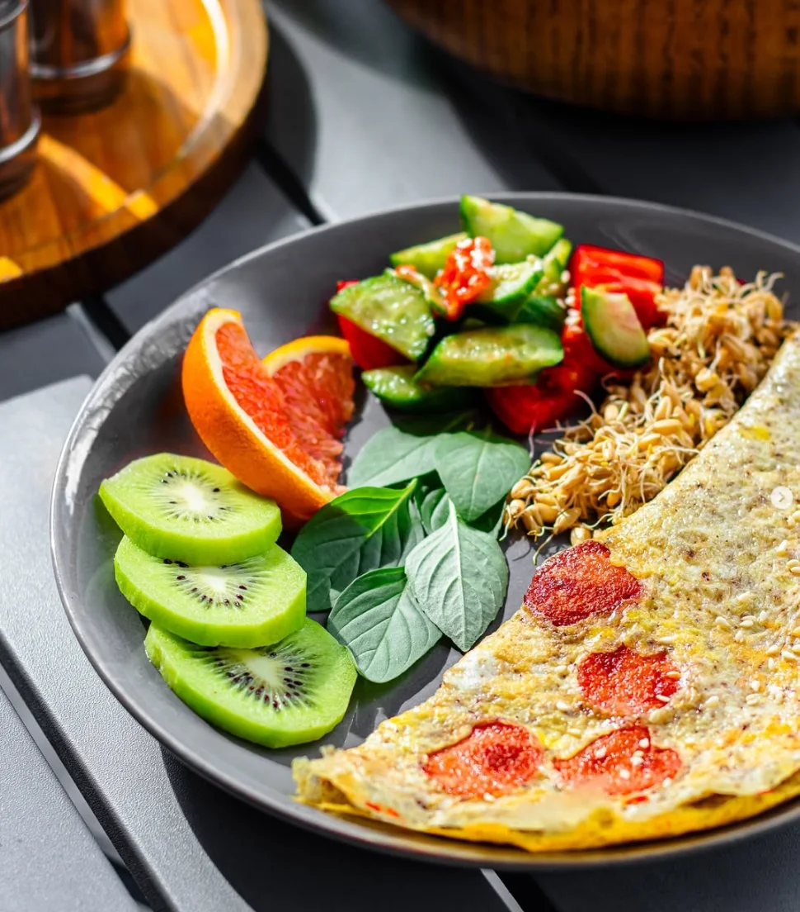

Iced Latte
اسپرسوی غلیظ و شیر سرد روی یخ؛ نرم، خنک و دلچسب.

قهوه / آدمها / لحظهها
کافهای که هر فنجانش با دقت آماده میشود؛ در فضایی که برای مکث و لذت بردن از لحظه ساخته شده است.



درباره GUFER
GUFER فقط یک کافه نیست؛ یک حس است. فضایی که قهوهی خوب، آدمهای خوب و لحظههای ماندگار کنار هم جمع میشوند.
ما به هنر سادگی، زیبایی کیفیت و قدرت یک فنجان قهوهی درست دمشده باور داریم.
فلسفهی ماقهوههای امضا
هر فنجان داستانی دارد. نوشیدنیهای امضای ما حاصل انتخاب دقیق، تکنیک درست و عشقی عمیق به قهوه است.
مشاهدهی منو
اسپرسوی غلیظ و شیر سرد روی یخ؛ نرم، خنک و دلچسب.

اسپرسو، شیر بخارداده و فوم ابریشمی؛ تعادلی کلاسیک در هر جرعه.

اسپرسوی خالص با آب داغ؛ ساده، پررنگ و بیحاشیه.
فضای کافه



به دیدار ما بیایید
برای یک فنجان قهوه، گوشهای آرام یا گفتوگویی خوب سر بزنید. خوشحال میشویم میزبان شما در GUFER باشیم.
مسیریابی در گوگل مپهرروز: ۷:٣۰ تا ۲۴:٠٠ جمعهها : ۹:۰۰ تا ۲۴:۰۰